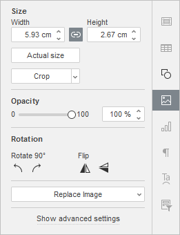
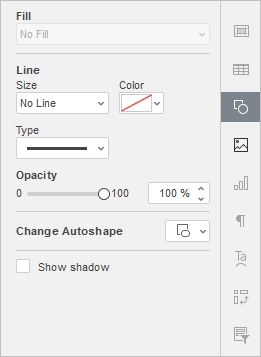
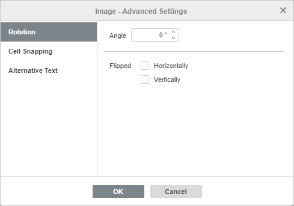
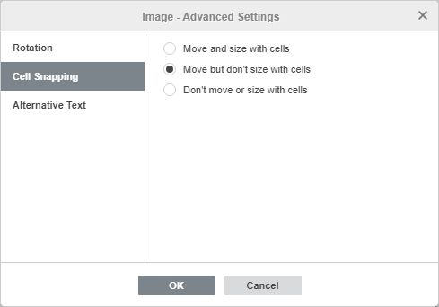
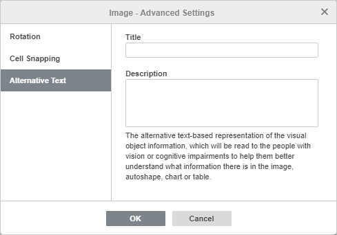
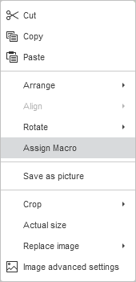

Umetanje slika
Spreadsheet Editor vam omogućava da umetnete slike u najpopularnijim formatima u svoj radni list. Podržani su sledeći formati slika: BMP, GIF, JPEG, JPG, PNG.
Umetanje slike
Da biste umetnuli sliku u tabelu,
- postavite kursor na mesto gde želite da dodate sliku,
- pređite na karticu Insert na gornjoj traci sa alatkama,
- kliknite na ikonu Image na gornjoj traci sa alatkama,
-
izaberite jednu od sledećih opcija za učitavanje slike:
-
opcija Image from File otvara standardni dijalog za izbor fajla. Pregledajte hard disk vašeg računara, pronađite željeni fajl i kliknite na dugme Open
U online editoru možete izabrati više slika odjednom.
- opcija Image from URL otvara prozor u koji možete uneti web adresu željene slike i kliknuti na dugme OK
- opcija Image from Storage otvara prozor Select data source. Izaberite sliku sa vašeg portala i kliknite na dugme OK
-
opcija Image from File otvara standardni dijalog za izbor fajla. Pregledajte hard disk vašeg računara, pronađite željeni fajl i kliknite na dugme Open
Nakon toga, slika će biti dodata u radni list. Sliku možete sačuvati kao zasebnu datoteku na hard disku koristeći opciju Save as picture iz kontekstnog menija (desni klik).
Podešavanje postavki slike
Kada je slika dodata, možete promeniti njenu veličinu i položaj.
Da biste precizno definisali dimenzije slike:
- izaberite željenu sliku mišem,
-
kliknite na ikonu Image settings na desnoj bočnoj traci,

- u odeljku Size podesite potrebne vrednosti za Width i Height. Ako je dugme Constant proportions aktivirano (u tom slučaju izgleda ovako ), širina i visina će se menjati istovremeno uz zadržavanje originalnog odnosa stranica slike. Da biste vratili stvarnu veličinu slike, kliknite na dugme Actual Size.
Da biste isekli (crop) sliku:
Kliknite na dugme Crop da biste aktivirali ručke za isecanje koje se pojavljuju na uglovima slike i na sredini svake ivice. Ručno prevlačite ručke da biste podesili oblast isecanja. Možete pomeriti kursor miša preko ivice oblasti za isecanje tako da se pretvori u ikonu strelice i prevući oblast.
- Da biste isekli jednu stranu, prevucite ručku koja se nalazi na sredini te strane.
- Da biste istovremeno isekli dve susedne strane, prevucite jednu od ugaonih ručki.
- Da biste podjednako isekli dve suprotne strane slike, držite taster Ctrl dok prevlačite ručku na sredini jedne od tih strana.
- Da biste podjednako isekli sve strane slike, držite taster Ctrl dok prevlačite bilo koju od ugaonih ručki.
Kada definišete oblast isecanja, kliknite ponovo na dugme Crop, pritisnite taster Esc ili kliknite bilo gde van oblasti isecanja da biste primenili izmene.
Nakon izbora oblasti isecanja, moguće je koristiti i opcije Crop to shape, Fill i Fit iz padajućeg menija Crop. Kliknite ponovo na dugme Crop i izaberite željenu opciju:
- Ako izaberete opciju Crop to shape, slika će popuniti određeni oblik. Možete izabrati oblik iz galerije koja se otvara kada pređete mišem preko opcije Crop to Shape. I dalje možete koristiti opcije Fill i Fit da biste izabrali način na koji se slika uklapa u oblik.
- Ako izaberete opciju Fill, centralni deo originalne slike biće zadržan i korišćen za popunjavanje izabrane oblasti, dok će ostali delovi slike biti uklonjeni.
- Ako izaberete opciju Fit, slika će biti prilagođena tako da se uklopi po visini ili širini oblasti isecanja. Nijedan deo originalne slike neće biti uklonjen, ali se mogu pojaviti prazni prostori unutar izabrane oblasti.
Da biste vratili sliku na podrazumevane dimenzije u pikselima, kliknite na dugme Reset crop.
Opacity – koristite ovaj odeljak da podesite nivo Opacity prevlačenjem klizača ili ručnim unosom procentualne vrednosti. Podrazumevana vrednost je 100%, što odgovara punoj neprozirnosti. Vrednost 0% odgovara potpunoj providnosti.
Da biste rotirali sliku:
- izaberite željenu sliku mišem,
- kliknite na ikonu Image settings na desnoj bočnoj traci,
-
u odeljku Rotation kliknite na jedno od dugmadi:
- za rotaciju slike za 90 stepeni ulevo
- za rotaciju slike za 90 stepeni udesno
- za horizontalno okretanje slike (sleva nadesno)
- za vertikalno okretanje slike (odozgo nadole)
Alternativno, možete kliknuti desnim tasterom miša na sliku i koristiti opciju Rotate iz kontekstnog menija.
Da biste zamenili umetnutu sliku,
- izaberite željenu sliku mišem,
- kliknite na ikonu Image settings na desnoj bočnoj traci,
- kliknite na dugme Replace Image,
-
izaberite potrebnu opciju: From File, From Storage ili From URL i odaberite željenu sliku.
Alternativno, možete kliknuti desnim tasterom miša na sliku i koristiti opciju Replace image iz kontekstnog menija.
Izabrana slika će biti zamenjena.
Kada je slika izabrana, dostupna je i ikona Shape settings sa desne strane. Klikom na ovu ikonu možete otvoriti karticu Shape settings na desnoj bočnoj traci i podesiti tip, veličinu, boju i neprozirnost linije, kao i promeniti tip oblika izborom drugog oblika iz menija Change Autoshape. Oblik slike će se shodno tome promeniti.
Na kartici Shape Settings takođe možete koristiti opciju Show shadow da biste dodali senku slici.

Podešavanje naprednih postavki slike
Da biste promenili napredne postavke, kliknite desnim tasterom miša na sliku i izaberite opciju Image Advanced Settings iz kontekstnog menija ili kliknite na link Show advanced settings na desnoj bočnoj traci. Otvoriće se prozor sa svojstvima slike:

Kartica Rotation sadrži sledeće parametre:
- Angle – koristite ovu opciju da rotirate sliku za tačno određeni ugao. Unesite potrebnu vrednost u stepenima ili je prilagodite pomoću strelica sa desne strane.
- Flipped – označite polje Horizontally da biste horizontalno okrenuli sliku (sleva nadesno) ili polje Vertically da biste je vertikalno okrenuli (odozgo nadole).

Kartica Cell Snapping sadrži sledeće parametre:
- Move and size with cells – ova opcija omogućava da se slika veže za ćeliju iza nje. Ako se ćelija pomeri (npr. ako ubacite ili obrišete redove/kolone), slika će se pomeriti zajedno sa ćelijom. Ako promenite širinu ili visinu ćelije, slika će takođe promeniti svoju veličinu.
- Move but don't size with cells – ova opcija omogućava da se slika veže za ćeliju, ali sprečava promenu njene veličine. Ako se ćelija pomeri, slika će se pomeriti zajedno sa njom, ali dimenzije slike ostaju nepromenjene.
- Don't move or size with cells – ova opcija sprečava pomeranje ili promenu veličine slike kada se promeni položaj ili veličina ćelije.

Kartica Alternative Text omogućava da definišete Title i Description koji će biti pročitani osobama sa oštećenjem vida ili kognitivnim poteškoćama kako bi bolje razumele koju informaciju slika sadrži.
Da biste obrisali umetnutu sliku, kliknite na nju i pritisnite taster Delete.
Dodela makroa slici
Možete omogućiti brz i jednostavan pristup makrou u tabeli dodeljivanjem makroa bilo kojoj slici. Kada dodelite makro, slika se ponaša kao dugme i možete pokrenuti makro klikom na nju.
Da biste dodelili makro:
-
Kliknite desnim tasterom miša na sliku kojoj želite da dodelite makro i izaberite opciju Assign Macro iz padajućeg menija.

- Otvoriće se dijalog Assign Macro
-
Izaberite makro sa liste ili unesite naziv makroa i kliknite na OK da biste potvrdili.